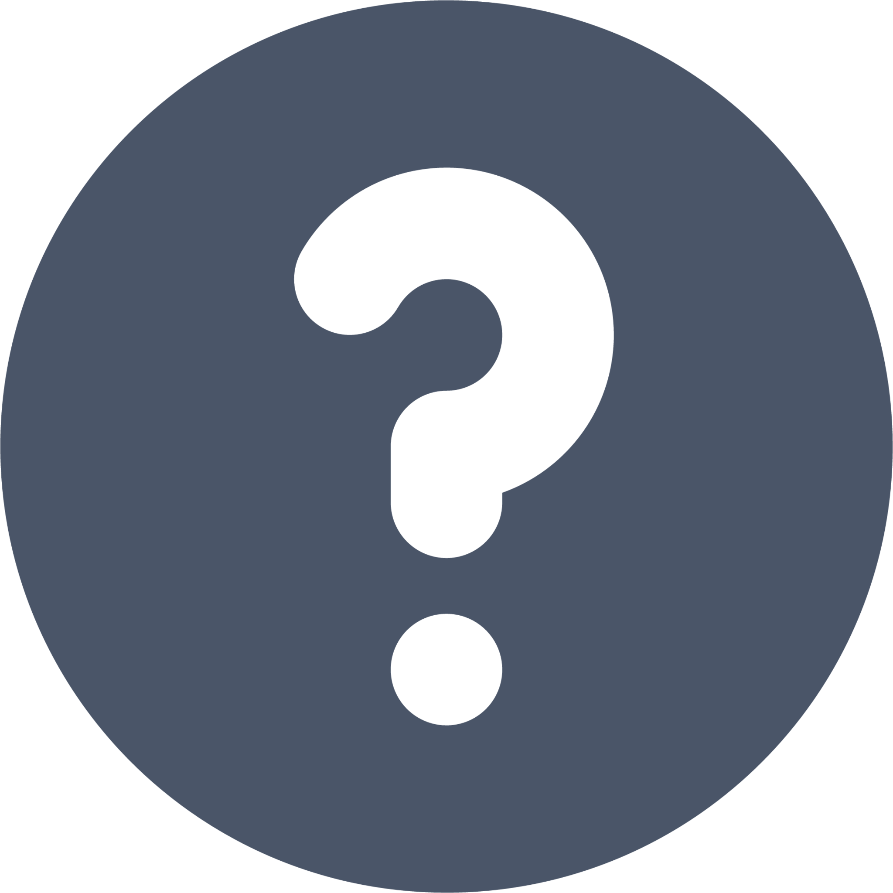
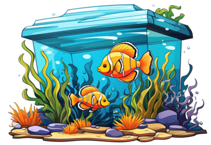
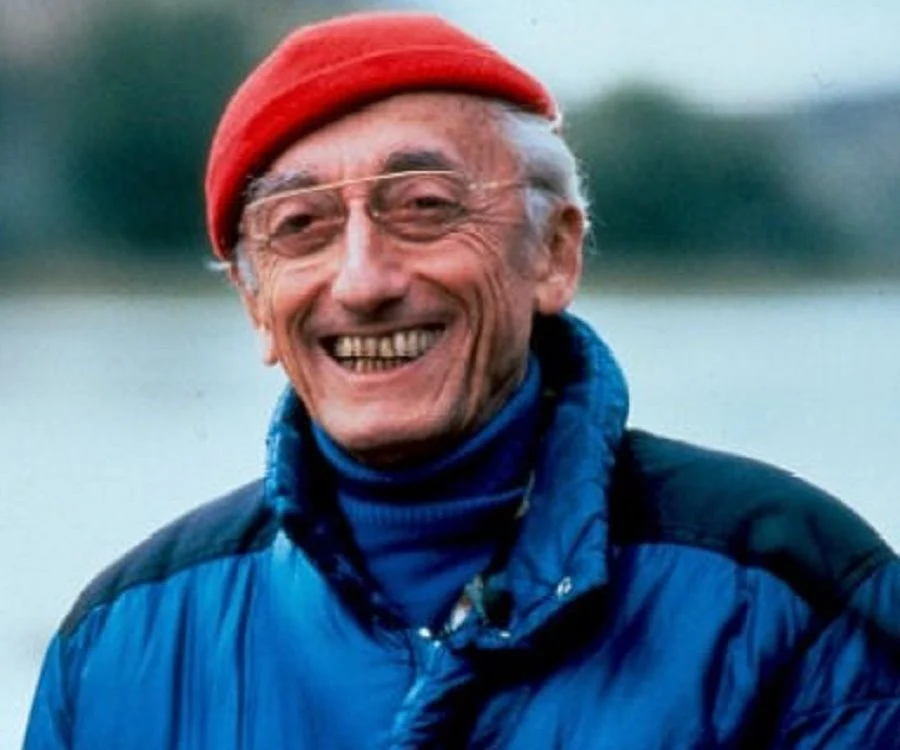
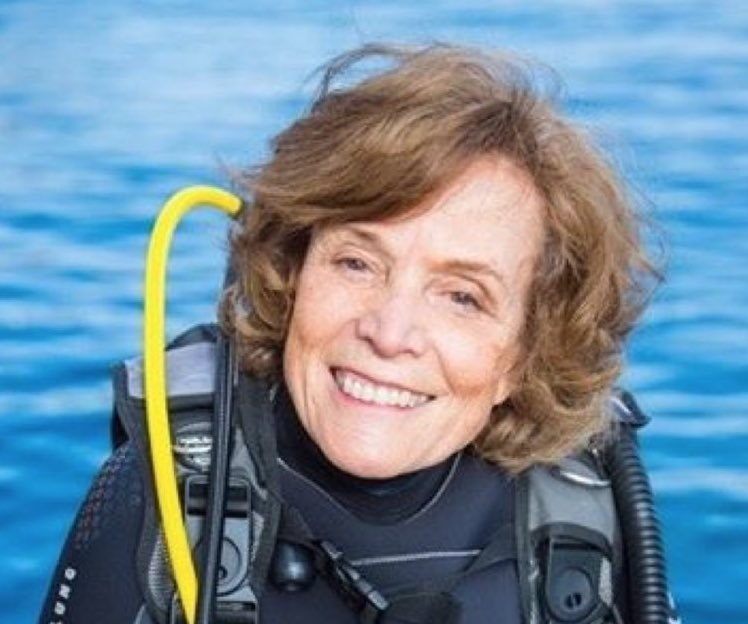

This site was created by Alexander Ho.
Aquatic Wonders
The website that is about marine biology!
Fun facts
Fun Facts about FishMarine Biologist
 How to become a Marine BiologistTop 22 Best Aquariums and Fish Tank Shops in Singapore
Find out more
Top Seven Benefits of Public Aquariums
Find out more
The World's Biggest Aquarium: ChimeLong Spaceship
3 Famous Marine Biologists

Jacques Cousteau
Jacques Cousteau (11 June 1910- 25 June 1997), was a French naval officer, oceanographer, filmmaker and author. He co-invented the first successful open-circuit self-contained underwater breathing apparatus (SCUBA), called the Aqua-Lung, which assisted him in producing some of the first underwater documentaries.

Sylvia Earle
Sylvia Alice Earle (born August 30, 1935) is an American marine biologist, oceanographer, explorer, author, and lecturer. She has been a National Geographic Explorer at Large (formerly Explorer in Residence) since 1998. Earle was the first female chief scientist of the U.S. National Oceanic and Atmospheric Administration, and was named by Time Magazine as its first Hero for the Planet in 1998.
Jane Lubchenco
Jane Lubchenco (born December 4, 1947) is an American environmental scientist and marine ecologist who teaches and conducts research at Oregon State University. Her research interests include interactions between the environment and human well-being, biodiversity, climate change, and sustainable use of oceans and the planet. From 2009 to 2013, she served as Administrator of NOAA and Under Secretary of Commerce for Oceans and Atmosphere. In February 2021, she was appointed by President Joe Biden to serve as Deputy Director for Climate and Environment in the White House Office of Science and Technology Policy.
Scientific Names of Various Fish
| No. | Type of fish | Scientific name |
|---|---|---|
| 1 | Goldfish | Carassius auratus |
| 2 | Siamese Fighting Fish | Betta splendens |
| 3 | Clownfish | Amphiprioninae |
| 4 | Japanese Koi | Cyprinus rubrofuscus |
| 5 | Carp | Cyprinus carpio |
| 6 | Salmon | Salmo salar |